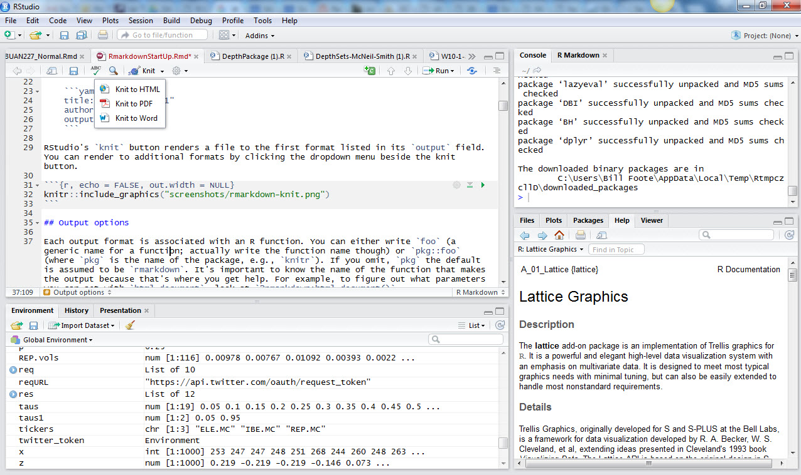

Chapter 8 Appendix 1 – R environment for financial analytics
8.1 Setting Up R for Analytics
8.1.1 Motivation
The general aim of this section is to situate the software platform R as part of your learning of statistics, operational research, and data analytics that accompanies nearly every domain of knowledge, from epidemiology to financial engineering. The specific aim of this appendix is to provide detailed instructions on how to install R an integrated development environment (IDE), RStudio, and a documentation system R Markdown on a personal computing platform (also known as your personal computer). This will enable us to learn the statistical concepts usually included in an analytics course with explanations and examples aimed at the appropriate level. This appendix purposely does not attempt to teach you about R’s many fundamental and advanced features.
8.1.2 Some useful R resources
There are many R books useful for managing implementation of models in this course. Three useful R books include:
- Paul Teetor, The R Cookbook
- Phil Spector, Data Manipulation with R
- Norman Matloff, The Art of R Programming: A Tour of Statistical Software Design
- John Taveras, R for Excel Users at https://www.rforexcelusers.com/book/.
The first one will serve as our R textbook. The other books are extremely valuable reference works. You will ultimately need all three (and whatever else you can get your hands on) in your professional work. John Taveras’s book is an excellent bridge and compendium of Excel and R practices.
Much is available in books, e-books, and online for free. This is an extensive online user community that links expert and novice modelers globally.
The standard start-up is at CRAN http://cran.r-project.org/manuals.html. A script in the appendix can be dropped into a workspace and played with easily.
Julian Faraway’s https://cran.r-project.org/doc/contrib/Faraway-PRA.pdf is a fairly complete course on regression where you can imbibe deeply of the many ways to use
Rin statistics.Along econometrics lines is Grant Farnsworth’s https://cran.r-project.org/doc/contrib/Farnsworth-EconometricsInR.pdf.
Winston Chang’s http://www.cookbook-r.com/ and Hadley Wickham’s example at http://ggplot2.org/ are online graphics resources.
Stack Overflow is a programming user community with an
Rthread at http://stackoverflow.com/questions/tagged/r. The odds are that if you have a problem, error, or question, it has already been asked, and answered, on this site.For using
R Markdownthere is a short reference at https://www.rstudio.com/wp-content/uploads/2015/03/rmarkdown-reference.pdf. Cosma Shalizi has a much more extensive manual at http://www.stat.cmu.edu/~cshalizi/rmarkdown/.
8.1.3 Install R on your computer
Directions exist at the R website, <(http://cran.rproject.org/)> for installing R. There are several twotorials, including some on installation that can be helpful at http://www.twotorials.com/.
Here are more explicit instructions that tell you what to do.
Download the software from the CRAN website. There is only one file that you need to obtain (a different file depending on the operating system). Running this file begins the installation process which is straight-forward in most, if not all, systems.
Download
Rfrom the web. Go theRhome page at http://cran.us.r-project.org/.If you have Windows (95 or later), then perform these actions. Click on the link
Windows (95 and later), then click on the link calledbase, and finally click onrw1071.exe(or the most recent version which could have a larger number in the file name). This begins the download of a file whose size is currently about 20MB. After the download is complete, double-click on the downloaded file and follow the on screen installation instructions.If you have Macintosh (OS X), then perform these actions. Click on the link
MacOS (System 8.6 to 9.1 and MacOS X), then click onrm171.sit(or the most recent version which could have a larger number in the file name) which begins the download. When given a choice to unstuff or save, choose save and save it on your desktop. Double-click on the downloaded file. Your Mac will unstuff the downloaded file and create anRfolder. Inside this folder, there are many files including one with theRlogo. You may drag a copy of this to your panel and then drag the wholeRfolder to yourApplicationsfolder (located on the hard drive). After completing this, you can drag the original downloaded file to your trash bin.
8.1.4 Install RStudio
Every software platform has a graphical user interface (“GUI” for short). One of the more popular GUIs, and the one used exclusively in this course, is provided by RStudio at http://www.rstudio.com. RStudio is a freely distributed integrated development environment (IDE) for R. It includes a console to execute code, a syntax-highlighting editor that supports direct code execution, as well as tools for plotting, reviewing code history, debugging code, and managing workspaces. In the following steps you will navigate to the RStudio website where you can download R and RStudio. These steps assume you have a Windows or Mac OSX operating system.
Click on https://www.rstudio.com/products/RStudio/ and navigate down to the
Download Desktopbutton and click.Click on the
Downloadbutton for theRStudio Desktop Personal Licensechoice.Navigate to the sentence: “RStudio requires R 2.11.1+. If you don’t already have R, download it here.” If you have not downloaded
R(or want to again), click onhere. You will be directed to the https://cran.rstudio.com/ website in a new browser tab.
In the
CRANsite, click onDownload R for Windows, orDownload R for (MAC) OS Xdepending on the computer you use. This action sends you to a new webpage in the site.Click on
base. This action takes you to the download page itself.
- If you have
Windows
Click on
Download R 3.3.2 for Windows (62 megabytes, 32/64 bit)(as of 11/8/2016; other version numbers may appear later than this date). A Windows installer in an over 70 MBR-3.3.2-win.exefile will download through your browser.In the Chrome browser, the installation-executable file will reside in a tray at the bottom of the browser. Click on the up arrow to the right of the file name and click
Openin the list box. Follow the many instructions and accept default values throughout.Use the default
Coreand32-Bitfiles if you have a Windows 32-bit Operating System. You may want to use64-Bitfiles if that is your operating system architecture. You can check this out by going to theControl Panel, thenSystem and Security, thenSystem, and look up theSystem Type:. It may read for example32-bit Operating System.Click
Nextto accept defaults. ClickNextagain to accept placingRin the startup menu folder. ClickNextagain to use theRicon and alter and create registries. At this point the installer extracts files, creates shortcuts, and completes the installation.Click
Finishto finish.
- If you have a
MAC OS X
Click on
Download R 3.3.2 for MACs (62 megabytes, 32/64 bit)(as of 11/8/2016; other version numbers may appear later than this date). A Windows installer in an over 70 MBR-3.3.2-win.exefile will download through your browser.When given a choice to unstuff or save, choose save and save it on your desktop. Double-click on the downloaded file. Your Mac will unstuff the downloaded file and create an
Rfolder. Inside this folder, there are many files including one with theRlogo.Inside the
Rfolder drag a copy ofRlogo file to your panel and then drag the wholeRfolder to yourApplicationsfolder (located on the hard drive).
- Now go back to
RStudiobrowser tab. Click onRStudio 1.0.44 - Windows Vista/7/8/10orRStudio 1.0.44 - MAC OS Xto downloadRStudio. Executiable files will download. Follow the directions exactly, and similarly, to the ones above.
8.1.5 Install R Markdown
Click on RStudio in your tray or start up menu. Be sure you are connected to the Internet. A console panel will appear. At the console prompt > type
This action will install the
RMarkdownpackage. This package will enable you to construct documentation for your work in the course. Assignments will be documented using RMarkdown for submission to the learning management system.This extremely helpful web page, http://rmarkdown.rstudio.com/gallery.html, is a portal to several examples of
R Markdownsource files that can be loaded intoRStudio, modified, and used with other content for your own work.
8.1.6 Install LaTex
R Markdown uses a text rendering system called LaTeX to render text, including mathematical and graphical content.
- Install the
MikTeXdocument rendering system forWindowsorMacTeXdocument rendering system forMac OS X.
For
Windows, navigate to the https://miktex.org/download page and go to the 64- or 32- bit installer. Click on the appropriateDownloadbutton and follow the directions. Be very sure you select the COMPLETE installation. Frequently Asked Questions (FAQ) can be found at https://docs.miktex.org/faq/. If you haveRStudioalready running, you will have to restart your session.For
MAC OS X, navigate to the http://www.tug.org/mactex/ page and download theMacTeXsystem and follow the directions. This distribution requires Mac OS 10.5 Leopard or higher and runs on Intel or PowerPC processors. Be very sure you select the FULL installation. Frequently Asked Questions (FAQ) can be found at https://docs.miktex.org/faq/. If you haveRStudioalready running, you will have to restart your session. FAQ can be found at http://www.tug.org/mactex/faq/index.html.
8.1.7 R Markdown
Open RStudio and see something like this screenshot…

You can modify the position and content of the four panes by selecting
View > Panes > Pane Options.Under
File > New File > Rmarkdowna dialog box invites you to open document, presentation, Shiny, and other files. Upon choosingdocumentsyou may open up a new file. UnderFile > Save Assave the untitle file in an appropriate directory. TheR Markdownfile extensionRmdwill appear in the file name in your directory.When creating a new
Rmarkdownfile,RStudiodeposits a template that shows you how to use the markdown approach. You can generate a document by clicking onknitin the icon ribbon attached to the file name tab in the script pane. If you do not seeknit, then you might need to install and load theknitrpackage with the following statements in theRconsole. You might need also to restart your RStudio session.
The Rmd file contains three types of content:
- An (optional) YAML header surrounded by
---on the top and the bottom ofYAMLstatements.YAMLis “Yet Another Markdown (or up) Language”. Here is an example from this document:
---
title: "Setting Up R for Analytics"
author: "Bill Foote"
date: "November 11, 2016"
output: pdf_document
---- Chunks of R code surrounded by ``` (find this key usually with the
~symbol). - Text mixed with text formatting like
# headingand_italics_and mathematical formulae like$z = \frac{(\bar x-\mu_0)}{s/\sqrt{n}}$which will render
\[z = \frac{(\bar x-\mu_0)}{s/\sqrt{n}}\].
When you open an .Rmd file, RStudio provides an interface where code, code output, and text documentation are interleaved. You can run each code chunk by clicking the Run icon (it looks like a play button at the top of the chunk), or by pressing Cmd/Ctrl + Shift + Enter. RStudio executes the code and displays the results in the console with the code.
You can write mathematical formulae in an R Markdown document as well. For example, here is a formula for net present value.
This script will render
\[ NPV = \sum_{t=0}^{T} \frac{NCF_t}{(1+WACC)^t} \]
- Here are examples of common in file text formatting in
R Markdown.
Text formatting
------------------------------------------------------------
*italic* or _italic_
**bold** __bold__
`code`
superscript^2^ and subscript~2~
Headings
------------------------------------------------------------
# 1st Level Header
## 2nd Level Header
### 3rd Level Header
Lists
------------------------------------------------------------
* Bulleted list item 1
* Item 2
* Item 2a
* Item 2b
1. Numbered list item 1
1. Item 2. The numbers are incremented automatically in the output.
Links and images
------------------------------------------------------------
<http://example.com>
[linked phrase](http://example.com)

Tables
------------------------------------------------------------
First Header | Second Header
------------- | -------------
Content Cell | Content Cell
Content Cell | Content Cell
Math
------------------------------------------------------------
$\frac{\mu}{\sigma^2}$
\[\frac{\mu}{\sigma^2}]
More information will be provided on R Markdown documentation throughout the course.
8.1.8 jaRgon
(directly copied from Patrick Burns at http://www.burns-stat.com/documents/tutorials/impatient-r/jargon/, and annotated a bit, for educational use only.)
- atomic vector
An object that contains only one form of data. The atomic modes are: logical, numeric, complex and character.
- attach
The act of adding an item to the search list. You usually attach a package with the require function, you attach saved files and objects with the attach function.
- data frame
A rectangular data object where each column may be a different type of data. Conceptually a generalization of a matrix, but implemented entirely differently.
- factor
A data object that represents categorical data. It is possible (and often unfortunate) to confuse a factor with a character vector.
- global environment
The first location on the search list, and the place where objects that you create reside. See search list.
- list
A type of object with possibly multiple components where each component may be an arbitrary object, including a list.
- matrix
A rectangular data object where all cells have the same data type. Conceptually a specialization of a data frame, but implemented entirely differently. This object has rows and columns.
- package
A collection of R objects in a special format that includes help files and such. Most packages primarily or exclusively contain functions, but some packages exclusively contain datasets.
- search list
The collection of locations that R searches for objects when it is evaluating a command.
8.2 Nomenclature
Here is a table of symbols used throughout the text.